直近1週間の更新
6/7 (土)

スクラムフェス金沢2025の打ち合わせ(25回目)に参加してきた  天の月
天の月
aki-m.hatenadiary.com スクラムフェス金沢2025に向けた準備をしてきたので、会の様子を書いていこうと思います。(今回がスクラムフェス金沢2025前最後の打ち合わせでした) Keynote準備 Pekoの準備 サーバー準備 Keynote準備 前回からの進展として、Keynoteの資料が送られてきたり電話で会話させていただける予定ができたりしたので、それらの共有とConfengineに仮登壇のタイトルを記載しておくこととなにかトラブルがあって投影できなかったときのために、いただいた資料をPDF化することを決めました。 Pekoの準備 当日使うPekoに関して、準備や段取りの…
2時間前

【Go】簡単なユニットテストのサンプルコード  Zennの「Test」のフィード
Zennの「Test」のフィード
概要Goのテストコードのとても簡単なサンプルコードテスト対象コード、テストコード、テストの実行方法を記載 サンプルコード ディレクトリ構成などGoでは、_test.go****で終わるファイルにテストコードを書くTestXXX****という関数名にするtest_demo/├── calc.go└── calc_test.go ← テストコードはここ calc.gopackage calcfunc Add(a, b int) int {return a + b} calc_test.gopackage calcimport "...
13時間前

CLIテストカバレッジ維持とE2Eテスト実装 （開発日記 No.097） Zennの「Test」のフィード
!この記事はgemini-2.5-flash-preview-04-17によって自動生成されています。 関連リンク前回の開発日記 はじめに昨日はCLIモジュールのテストを安定させ、カバレッジを84%まで向上させることができました。テストが全件パスするようになり、CLIの基盤部分の品質には一定の手応えを感じています。今日は、このテストカバレッジを維持・向上させつつ、さらに一歩進んでアプリケーション全体の利用フローを確認するためのE2E（エンドツーエンド）テストの実装に挑戦しました。 背景と目的これまでのテストは主に単体テストや結合テストが中心でした。これらは個々...
13時間前
6/6 (金)

スクラムフェス大阪2025にプロポーザルを出した 天の月
スクラムフェス大阪2025にプロポーザルを出したのでその告知です。 その1 その2 このプロポーザルを出した理由 共通 その1 その2 その1 confengine.com コミュニティで多数の事例を聞いたり、アジャイル開発を基軸とした多数のプロセスや理論を学ぶと、自分が置かれている状況の問題点や不遇さが明確になったり、自分が理想としている姿がどんどん磨かれてGapが勝手に広がっていくことがありました。そういったとき、自分の場合は、(実際に目に見える行動には移さなくても)自分自身がそのプロダクトやプロジェクトに対する当事者であるにもかかわらず、そこから少し離れたような場所に行って、うまくいって…
1日前
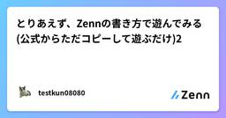
とりあえず、Zennの書き方で遊んでみる(公式からただコピーして遊ぶだけ)2 Zennの「Test」のフィード
概要基本的には個人用です。（すみません）ただ書き方で遊んでみたかったのです。 感想埋め込みがうまくいかないことがある。iframeをそのまま使えたら、楽な気がする。 Gist Codepen (猫はいつもいいね🐈) Slideshare (大共感) Speakerdeck (フィンランドサウナはいつか行ってみたい) Docswell (またねこ) codesandbox (やはり猫) Stackblitz (もう一度猫) figma (ミーム行ってみよう) blueprintue (特に面白いのが見つからないのでサンプル...
1日前
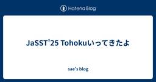
JaSST'25 Tohokuいってきたよ
sae's blog
ごきげんよう。sae (@sito_110) です。 先日、JaSST'25 Tohokuに参加してきました。 色々お話聞いたり話したりしたので思い出を書きます。 ワークについて VSTePの詳細については各々ググっていただきまして、今回参加したワークでは、すごくざっくりとまとめると以下のような手順で進めていきました。 テストしたいことを出し合う ツリー構造にする グループに分ける 実際にやる順番に並べる 自分たちが普段やっているやり方だと、テストしたいことをテストに入るメンバーで色々話し合う → 実行する順番に並べる、という感じでテストを考えています。 ツリーにしたりグループに分けるくだりが…
1日前
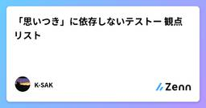
「思いつき」に依存しないテストー 観点リスト Zennの「QA」のフィード
Qiitaからの移植第一弾です はじめにプロダクトの品質を検査する時には欠かせないテスト。ただ、そのテストがその時の思いつきや、行き当たりバッタリで行われているとしたら…プロダクトの品質状況については当然、疑問が残りますよね。テストは意外とクリエイティブなお仕事なので、属人化しやすいと感じています。ということで、いつ誰がテストしても同じバグを検出できる方法を模索していました。そこで導入したのが「テスト観点リスト」です。 テスト観点とはどのような角度から、どのような目的でテストを実施するかという視点 です。ISTQB glossary（QAの用語集）にもテスト観点に関...
1日前
「思いつき」に依存しないテストー 観点リスト Zennの「Test」のフィード
Qiitaからの移植第一弾です はじめにプロダクトの品質を検査する時には欠かせないテスト。ただ、そのテストがその時の思いつきや、行き当たりバッタリで行われているとしたら…プロダクトの品質状況については当然、疑問が残りますよね。テストは意外とクリエイティブなお仕事なので、属人化しやすいと感じています。ということで、いつ誰がテストしても同じバグを検出できる方法を模索していました。そこで導入したのが「テスト観点リスト」です。 テスト観点とはどのような角度から、どのような目的でテストを実施するかという視点 です。ISTQB glossary（QAの用語集）にもテスト観点に関...
1日前
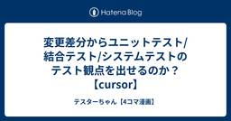
変更差分からユニットテスト/結合テスト/システムテストのテスト観点を出せるのか？【cursor】  テスターちゃん【4コマ漫画】
テスターちゃん【4コマ漫画】
AIを使って変更の差分(diff)から、ユニットテスト、結合テスト、システムテストのテスト観点を出してみる実験をしました。 ただ……テスターちゃんのブログがスマホで見ると広告が多くて＞＜ 課金してるはずだし、広告消しのオプションを入れているはずなのに消えないー！ そんなわけで、今回はZennに書いてみました。 1ページのマンガだと広告は入りようがないのですけど……＞＜ zenn.dev
1日前
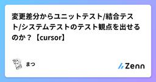
変更差分からユニットテスト/結合テスト/システムテストのテスト観点を出せるのか？【cursor】 Zennの「QA」のフィード
Unityで横スクロールのシューティングゲームを開発しています。(個人の趣味）新しい武器アイテムを追加したのでそのテストが必要となりました。そこで考えたのは以下。「AIで影響範囲を加味してユニットテストレベル、インテグレーションテスト(結合テスト)レベル、システムテストレベルのテスト観点を出せないか」試してみたのでご興味ある方はご覧ください。使用しているエディターはcursorで、モデルはclaude-4-sonnetです。 テストの基本 テストでやること3つテストにはおおよそ3つやることがあります。1つめは、決めたことが決めた通り動くか確認する活動。ユニットテス...
1日前
変更差分からユニットテスト/結合テスト/システムテストのテスト観点を出せるのか？【cursor】 Zennの「Test」のフィード
Unityで横スクロールのシューティングゲームを開発しています。(個人の趣味）新しい武器アイテムを追加したのでそのテストが必要となりました。そこで考えたのは以下。「AIで影響範囲を加味してユニットテストレベル、インテグレーションテスト(結合テスト)レベル、システムテストレベルのテスト観点を出せないか」試してみたのでご興味ある方はご覧ください。使用しているエディターはcursorで、モデルはclaude-4-sonnetです。 テストの基本 テストでやること3つテストにはおおよそ3つやることがあります。1つめは、決めたことが決めた通り動くか確認する活動。ユニットテス...
1日前
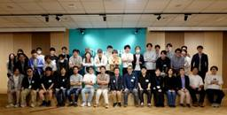
t-wadaさん「開発者生産性の観点から考える自動テスト」社内講演会 62
62 QA - SmartHR Tech Blog
QA - SmartHR Tech Blog
集合写真（t-wadaさんのポーズと言われ一部が腕を組んでいるシーン） こんにちは、品質保証部のtarappoです。 2025年5月26日（月）に和田卓人さん（以後、t-wadaさん）をお招きし、社内講演会を開催しました。 本記事では、その講演会に至った経緯や講演会の内容、そしてそこからのアクションについて紹介します。 t-wadaさんのプロフィールは次のとおりです。 和田卓人 （わだ たくと） プログラマ、テスト駆動開発者 学生時代にソフトウェア工学を学び、オブジェクト指向分析/設計に傾倒。執筆活動や講演、ハンズオンイベントなどを通じてテスト駆動開発を広めようと努力している。 『プログラマが…
1日前
単体テストの始め方/作り方 1 Zennの「Test」のフィード
タイトルは『単体テストの単体テストの考え方/使い方』のパクりオマージュです[1].今日, 業務で扱うコードでは品質向上や変更容易性といった観点から開発者自身が行う自動テストが重要な役割を担っています. しかしプログラミングの学習ではテストを中心として学ぶ機会はそれほど多くないでしょう. そのため単体テストを書いてみようと思っても, そもそも書き方がわからないといった悩みを抱える人も多いのではないでしょうか. プログラミングには「適切な変数名をつける」とか「早期リターンを使う」といったプラクティスがあります. これと同様に単体テストにも適切に書くためのコツがあります. ここでは単体テスト...
2日前
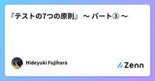
『テストの7つの原則』 〜 パート③ 〜 Zennの「Test」のフィード
はじめに現在、アプリ開発者としてプロダクトの持続的な成長やユーザーへのコミットに寄与するためにも、SDLC全体を見渡して開発をすること、および、それにはテストに関する体系的な知識が必要だと考え、それを効率良く学べるJSTQB Foundation Levelの資格試験の勉強をしており、そこでのインプットを記事にしたいと思います。今回はその中でも「テストの7つの原則」の一部について記事にしたいと思います。なお今回は 早期テストで時間とコストを節約こちらの原則について記事にしてみようと思います。 早期テストで時間とコストの節約とは開発をしているとこんな...
2日前
『テストの7つの原則』 〜 パート③ 〜  ソフトウェアテストタグが付けられた新着記事 - Qiita
ソフトウェアテストタグが付けられた新着記事 - Qiita
はじめに現在、アプリ開発者としてプロダクトの持続的な成長やユーザーへのコミットに寄与するためにも、SDLC全体を見渡して開発をすること、および、それにはテストに関する体系的な知識が必要だと考…
2日前
6/5 (木)
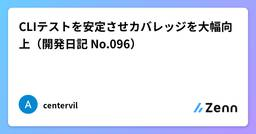
CLIテストを安定させカバレッジを大幅向上（開発日記 No.096） Zennの「Test」のフィード
!この記事はgemini-2.5-flash-preview-04-17によって自動生成されています。 関連リンク前回の開発日記 はじめに前回の開発では、CLI機能の修正やテンプレート・モデル指定といった新機能の追加、そしてそれらに伴うテストの更新を行いました。しかし、テストカバレッジはまだ低く、特にCLIモジュール（cli.py）は14%と改善の余地が大きい状況でした。そこで本日は、このCLIモジュールのテストに集中的に取り組み、テストの安定化、設計の統一、そしてカバレッジの大幅な向上を目指しました。 背景と目的開発中のツールは、コマンドラインインターフェー...
2日前

MCPをサービスに導入した日韓の事例を学ぶ〜FindyとQueryPieのサービス開発の裏側〜に参加してきた 天の月
MCPをサービスに導入した日韓の事例を学ぶ〜FindyとQueryPieのサービス開発の裏側〜 - connpass こちらのイベントに参加してきたので、会の様子と感想を書いていこうと思います。 会の概要 会の様子 講演1 : 開発2日間！MCPを導入した新サービスの裏側 講演2 :10分でMCPサーバーを作ろう！ パネルディスカッション MCPを活用したサービスが生まれた理由 自社プロダクトにMCPをどう活かして既存とどう変えているのか？ MCPサービス開発から数ヶ月たってどうか？ 反響はどうだったか？ どうやって早い意思決定をしたのか？ 新しいサービスでMCPを導入する際に重視したこと セ…
2日前
とりあえず、Zennの書き方で遊んでみる(公式からただコピーして遊ぶだけ) Zennの「Test」のフィード
見出し1です 見出し2だね 見出し3かな 見出し4デスこんちわ!おはようございます!こんばんわ!こんばんにちわ!一番目二番目アンカーテキストZennZenn webページ(キャプションが中央に来ない)タスク1タスク２タスク３終わらない終わったはず忘れた😅知らないまじ？シンプルコードhey.heyコード+ファイル名hey.hey@@ -4,6 +4,5 @@+ const foo = bar.baz([1, 2, 3]) + 1;- let ...
2日前
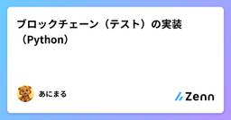
ブロックチェーン（テスト）の実装（Python） Zennの「Test」のフィード
今回は、前回までに書いたブロックチェーンのテストを実装しよーと思います！ 環境Windows10, VSCode, Pythontest_block_chain.py は、block_chain.py と同階層に作成します。 前回までの記事・コード前々回の記事：https://zenn.dev/animalz/articles/c82f20acccd30f前回の記事：https://zenn.dev/animalz/articles/928dd981c2d1a5コード：GitHub: https://github.com/Animalyzm/mikoto_proj...
2日前
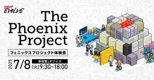
【限定12名・抽選制】フェニックスプロジェクト無料体験会  SHIFT EVOLVE グループの新着イベント
SHIFT EVOLVE グループの新着イベント
開催日時: 2025/07/08 09:30 ～ 18:00<br />開催場所: 東京都渋谷区代々木3-22-7 新宿文化クイントビル20F<br /><br /><h3>フェニックスプロジェクト無料体験会</h3><p>組織変革やDX推進などの新しい取り組みでは、部門間の協働とコラボレーションが極めて重要です。異なる部門の知識やリソースを結集させ、情報を共有し迅速な意思決定を実現することで、競争力を高めることが可能となります。しかし実際には多くの企業にとって、部門間の衝突が大きな課題となっています。</p><p>「フェニックスプロジェクト DevOpsシミュレーション研修」は、ビジネス推進のカギとなる部門間のコラボレーションをはじめとした「DevOps」の考え方を、ゲーム形式で楽しく実践的に学べるワークショップです。研修では、受講者は様々な問題を抱えた架空の企業の一員となります。続々と発生する問題に対処しながら業務を遂行することで、「DevOps」をどのように実務環境に適用するかを学びま...
2日前

WACATE 2025 夏の申し込みを締め切りました  ブログ - WACATE
ブログ - WACATE
表題の通り、WACATE 2025 夏の申し込みを締め切りました。 定員枠を増やして対応させていただいたのですが、増枠分含めて埋まりました。 多数のご参加申し込みをいただき、本当にありがとうございました。 参加申し込み済続きを読む投稿 WACATE 2025 夏の申し込みを締め切りました は WACATE に最初に表示されました。
2日前
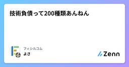
技術負債って200種類あんねん 42 Zennの「Test」のフィード
はじめにタイトル間違えました、技術負債は200種類もありません。あと、別に技術負債を褒めたいわけでもありません。しかし、技術負債って言葉としてはシンプルなのに、中身が複雑すぎて深掘りすると意外と無限に出てくるやつです。実際には200種類あるかどうかは別として、技術負債をカテゴリ分けしました。以前、技術的負債に言及した記事は以下になります。https://zenn.dev/ficilcom/articles/tech-credit-rating筆者は、技術負債について、もっと具体的かつ詳細に議論が行われるべきだと考えています。（どのタイプの技術負債か、そもそも解消すべきかどうか...
3日前
6/4 (水)

良いコードの道しるべ 変化に強いソフトウェアを作る原則と実践 - FL #97に参加してきた 天の月
forkwell.connpass.com こちらのイベントに参加してきたので、会の様子と感想を書いていこうと思います。 会の概要 会の様子 良いコードとは？ 書籍のおすすめポイント 対象読者 ハンマーと釘問題 知識の他に必要なこと Q&A 使い捨てられるようにしておく必要もあると思うがどう考えているか？ コード品質系の書籍は類書も多いが一番のきっかけは？ 生成AIのコーディング能力が伸びていて変更容易性そのものが人を前程しなくなっていると思うがどう考えるか？ 良いコードの評価基準を意識して参画するためにまず優先してほしいものは？ 意思決定のトレードオフにどのようにチームとして向き合うべきか？…
3日前
【締切が先か、定員が先か】ポジションペーパー第3弾 ブログ - WACATE
WACATE実行委員の杞憂です。 6月8日(日)の申込締切まで残り4日です。一方、定員も埋まりつつあり、こちらもあと数名です。 申込締切が先か、定員到達が先か、どきどきしながら過ごしています。 さて、今日のブログは実続きを読む投稿 【締切が先か、定員が先か】ポジションペーパー第3弾 は WACATE に最初に表示されました。
3日前
【申込締切まであと4日！】増枠しました！…が、すぐに埋まっちゃいそうです ブログ - WACATE
WACATE 2025 夏の申し込み締め切りまであと4日になりました。 昨日、「もうすぐ定員（参加者数の上限）の人数に達する」という話を書きましたが、定員に達しました。 そこで研修会場の担当者と相談した結果、十数名の増枠続きを読む投稿 【申込締切まであと4日！】増枠しました！…が、すぐに埋まっちゃいそうです は WACATE に最初に表示されました。
3日前
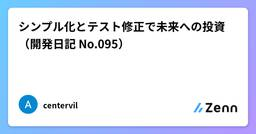
シンプル化とテスト修正で未来への投資（開発日記 No.095） Zennの「Test」のフィード
!この記事はgemini-2.5-flash-preview-04-17によって自動生成されています。 関連リンク前回の開発日記 はじめに昨日はCLIのテスト修正やGitHubリポジトリの更新を行いました。一歩ずつですが、プロジェクトの基盤が固まってきている手応えを感じています。さて、今日の開発テーマは、引き続きテストの強化です。特にGeminiプロバイダーのテストを修正し、全体的なテストカバレッジを向上させることに焦点を当てます。開発を進める上で、安定したテストスイートは不可欠ですからね。作業開始時点でのテストカバレッジは全体で64%でした。特に convert...
3日前
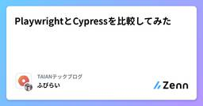
PlaywrightとCypressを比較してみた Zennの「QA」のフィード
株式会社TAIANでソフトウェアエンジニアをしている ふびらい といいます。E2Eテスト自動化ツールの技術選定に際して調査した結果を備忘録として共有します。E2Eテストを自動化するにあたり、AutifyなどのAIベースのSaaSを使用するか、Playwrightなどのコードベースのフレームワークを使用するかが大きな焦点になるかと思います。今回はコードベースのフレームワークに絞って比較します。前回は「スタートアップの1人目QAとして、QA組織の立ち上げ１ヶ月でやったこと」という記事を書いたので、そちらもあわせてご覧いただければと思います。 PlaywrightとCypressにつ...
4日前
6/3 (火)
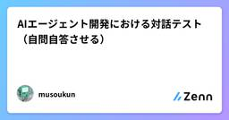
AIエージェント開発における対話テスト（自問自答させる） Zennの「Test」のフィード
AIエージェント開発の時に、自然言語による対話システムの品質保証は、従来のソフトウェアテストとは根本的に異なっているので良い方法が無いかなぁと考えていました。入力パターンが無限に存在し、文脈に依存した適切な応答が求められるためです。テストを考えてみて、LLMが自分自身でテストケースを生成する手法が割と有効だったので、実際の取り組みを通じて詳しく解説します。※本記事は、私自身のメモ的な意味合いが強く、確実性が保証されていないし、テスト駆動開発のように、しっかりと確立されて体系化されたものではないのでご了承ください。 従来のテスト手法との違い一般的なWebアプリケーションやAPI...
4日前

大人のソフトウェアテスト雑談会 #272【ずんだ】に参加してきた 天の月
大人のソフトウェアテスト雑談会 #272【ずんだ】 - connpass 今週もテストの街葛飾に行ってきたので、会の様子と感想を書いていこうと思います。 スタープレイヤー エンジニアリング統括責任者の手引き 飛び道具 VSTeP 全体を通した感想 スタープレイヤー 組織の中にいる一人のメンバーがメディア等でずっとスタープレイヤーとして取り上げられ続けるというのは、組織の10年後といった部分を見据えると懐疑的な目線があるという話がありました。 また、スタープレイヤーというのがスキルなら良いものの、ホリエモンムーブ的な目立つことに特化しているが故に目立つみたいな場合は厳しいですよね、という話が出て…
4日前
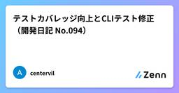
テストカバレッジ向上とCLIテスト修正（開発日記 No.094） Zennの「Test」のフィード
!この記事はgemini-2.5-flash-preview-04-17によって自動生成されています。 関連リンク前回の開発日記 はじめに前回の開発日記では、テンプレートファイル機能とモデル指定機能の実装、そして基本的なテストを完了させました。これで主要な機能は一通り形になったのですが、コードの品質という点ではまだまだ課題が残っています。特にテストカバレッジが低い状態です。そこで、今日の開発テーマは「テストカバレッジの向上とドキュメント更新」としました。コードの信頼性を高め、同時にユーザーが使いやすいようにドキュメントを整備することを目指します。 背景と目的現...
4日前
【申込締切まであと5日！】もうすぐ定員に達します ブログ - WACATE
WACATE 2025 夏の申し込み締め切りまであと5日になりました。 ただ、ありがたいことに、もうすぐ定員数（参加者の上限数）に達します。例年のペースですと、今日には定員に達する想定をしています。 現在、研修会場の担当続きを読む投稿 【申込締切まであと5日！】もうすぐ定員に達します は WACATE に最初に表示されました。
5日前
6/2 (月)
query-by-role というライブラリを作った 1 Zennの「Test」のフィード
こんにちは、フロントエンドエンジニアの mehm8128 です。最近やってることは sizu.me とか Bluesky とかに書いてます。今回は、タイトルの通りライブラリを作ってみたので紹介します。 query-by-role とはフロントエンドエンジニアならきっと使ったことがあるであろう、Testing Library や Playwright などでよく出てくる、あれです。getByRole と queryByRole がありますが、どちらに近いとか考えずに、クエリする感じが出ている query-by-role としました。汎用的すぎるので SWR みたいに、略して qbr...
5日前

スクラム祭りの打ち合わせ(40回目)をしてきた 天の月
aki-m.hatenadiary.com こちらの打ち合わせをしてきたので、会の様子と感想を書いていこうと思います。 定例時間の変更 メール返信 スポンサーの方々へのメール 定例時間の変更 元々月曜日の22:00からやっていたのですが、時間が遅すぎて眠くなるのと笑、自分が次の日がここ最近は朝早くて睡眠時間を削られるのがしんどいという2点から、火曜日の20:00-に時間変更することにしました。 メール返信 今回はスポンサーの方からのメールはないものの、スポンサー申込みを検討しているという方から連絡が来ていたので、メールを返信してきました。 前回送信したメールはテンプレート化しておこうという話を…
5日前
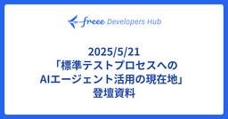
2025/5/21 「標準テストプロセスへの AIエージェント活用の現在地」 登壇資料 1 QA - freee Developers Hub
QA - freee Developers Hub
2025年5月21日に開催された、Tech-QA Meetup ～品質で未来を拓く最前線～ 内で、弊社QAE、原田が登壇した際に利用した資料情報です。 speakerdeck.com levtechcareer.connpass.com
5日前
【申込締切まであと6日！】WACATEは若手限定ではありません！ ブログ - WACATE
WACATE実行委員の風間です。 WACATEの運営をしていると、参加に迷っている人から「自分は若手じゃないから参加しちゃいけないんでしょ…？」と言われたりします。 そんなことはありません！どんな方でも大歓迎です！ WA続きを読む投稿 【申込締切まであと6日！】WACATEは若手限定ではありません！ は WACATE に最初に表示されました。
6日前
6/1 (日)

開発者とアーキテクトのためのコミュニケーションガイド ―パターンで学ぶ情報伝達術 - FL #95に参加してきた 天の月
forkwell.connpass.com こちらのイベントに参加してきたので、会の様子と感想を書いていこうと思います。 会の概要 会の様子 講演 視覚的コミュニケーション(第一部) マルチモーダル・コミュニケーション(第二部) ナレッジを伝達する(第三部) リモート・コミュニケーション(第四部) 本書の読み方 Q&A 相手が攻撃的だと感じたときの対処法は？ 送り手のコストが高くなりすぎると受け手とのコミュニケーションの総和は大きくなってしまうのでは？ 大抵は情報不足に起因していると思うのだが相互理解をコスパよくやるためにはどうすれば良いか？ 配慮をすると1文字あたりの情報量が小さくなるのが気…
6日前
趣味・徒然なるままに テスターちゃん【4コマ漫画】
今回はテストの話はしませんので悪しからず。 やっていた大きな仕事が一区切りついたのでようやく人心地がついたといったところです。 他にもやることがあるにはありますが、急に手持無沙汰にはなりましたので思い浮かぶままに文を書こうと思い立ちました。 趣味についてです。 人生を彩るためには趣味が大切 FIREを目指している人もリタイア前に趣味を持っておいた方が良いのでは？ そう言われても趣味がないんだが？ 何かをつくる趣味の醍醐味は、妄想が具現化すること 趣味発見の天敵は「面倒くさい」 同じぐらい残念な考え「タイパ」 今までやった「作る趣味」を簡単に紹介 お絵描き プラモデル DIY レジンアート レゴ…
6日前
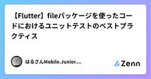
【Flutter】fileパッケージを使ったコードにおけるユニットテストのベストプラクティス Zennの「Test」のフィード
はじめにFlutter アプリで画像や動画などの大きなファイルを保存・操作する場合、file パッケージはその代表的な選択肢の一つです。https://pub.dev/packages/fileしかし、このパッケージを用いたコードに対してユニットテストを書く際には、通常のモックとは異なるアプローチが求められます。特に、ファイル操作に伴う FileSystemException をどのように扱い、どうテストに反映させるかが重要です。この記事では以下を中心に解説します。file パッケージを使った簡単な実装方法FileSystemException をアプリ独自の例外...
6日前
【申込締切まであと7日！】ポジションペーパー第2弾 ブログ - WACATE
WACATE実行委員のブロッコリーです。 あっという間に申込締切まであと1週間となりました。締切は 6/8（日）です。 申込時に必要なものとしてポジションペーパーがあります。ポジションペーパーには、A4用紙1枚分に自由に続きを読む投稿 【申込締切まであと7日！】ポジションペーパー第2弾 は WACATE に最初に表示されました。
7日前